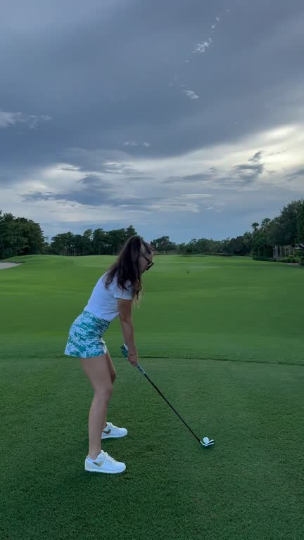
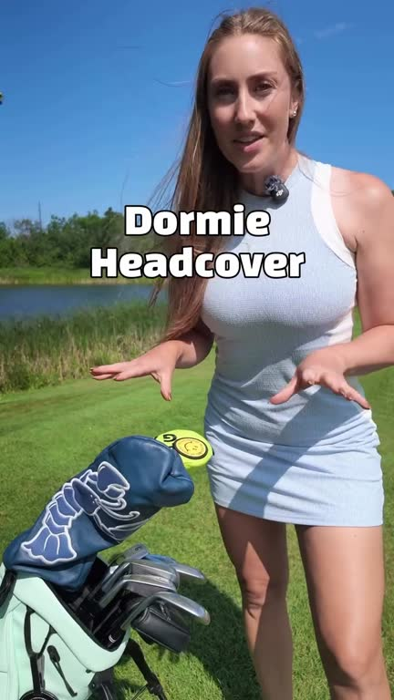
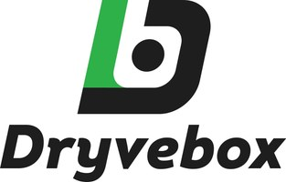

Golf Creator Tour · CreatorsYour golf content.
Your golf content.
Your next opportunity.
Connect with golf brands, find creator opportunities and build your place in the game. A community for content, competition and experiences.
Free to join. Bring your own game.

Your place in the game.Create. Connect. Compete.
Meet some of the brands in the GCT network

A community that creates together.
A look at one earlier PUR3 Golf campaign on GCT.
Creator posts made for the campaign
Combined creator follower reach
Follower reach, not measured video views.Join free as a creatorYour next opportunity starts with a profile.
From a first connection to your next opportunity
How GCT works for creators.
Build your profile.
Show your golf content and introduce yourself.
Find your fit.
Explore brand briefs and creator opportunities.
Agree the work.
Review deliverables, compensation and usage rights.
Make it yours.
Create content that brings your own style to the brief.
Build the relationship.
Deliver the work and keep making connections.
Where this can take you
Build your own path in golf.
Make the content you love.
Find the connections that move you forward.
Turn your creativity into opportunity.
Show brands your point of view. Build a portfolio through product stories, golf challenges and campaign work that fits your style.
- 01 Show what you create
- 02 Find the right brief
- 03 Build the relationship
Find more than your next campaign.
Meet people who see golf the way you do. Connect through creator competition, hosted rounds and shared experiences.
- 01 Meet other creators
- 02 Get involved in golf
- 03 Create something together
Your creator community
More reasons to keep creating.
Brand opportunities
Put your creativity to work.
Discover product seeding, brand challenges and content campaigns. Choose the opportunities that fit your voice and review the terms before taking part.
 Creator connections
Creator connectionsFind your people in golf.
Meet other golf creators, build relationships and turn a shared interest into your next collaboration.
 Content & competition
Content & competitionGive your next round a purpose.
Take part in creator challenges and competition. Bring your game, tell your story and follow the rules for each opportunity.

 Creator experiences
Creator experiencesTake the connection off the feed.
From hosted rounds to the Golf Creator Open, discover experiences where golf, creators and brands come together.
Your questions, answered.
How do I join as a creator?
Create your free GCT account, complete your profile and introduce the golf content you make. Then explore the community and the opportunities available to you.
Is GCT free for creators?
Yes. Joining the GCT creator community is free. Each campaign or experience has its own requirements and terms, which you can review before taking part.
Do I need a huge following?
GCT is a community for golf creators at different stages. Individual brands, campaigns and competitions may have specific eligibility requirements. A clear profile and examples of your work help show what you bring.
What opportunities can I find?
Explore product seeding, brand challenges, content campaigns, creator connections and golf experiences. Availability and eligibility depend on each opportunity.
Is every opportunity paid?
No. Compensation varies. Some opportunities involve product, some involve paid content and others are community or competition activities. Review the brief and agree compensation before creating work for a brand.
Can a brand use my content in ads?
Paid advertising use needs agreed permissions and usage rights. Review where, how and for how long the brand wants to use your content before accepting the campaign.
How does competition fit in?
GCT brings content, community and competition together. Campaign spend does not purchase points, rankings, Tour Cards or qualification. Competition follows the published sporting rules.
Can I take part in creator experiences?
Courses, destinations and the Golf Creator Open bring creators together beyond the feed. Each experience sets its own availability, selection requirements and costs.
How do I get help?
Email info@golfcreatoropen.com and tell the GCT team what you need help with.
Make your next connection in golf.
Your content. Your community. Your place in the game.